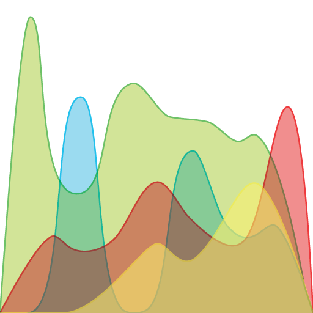
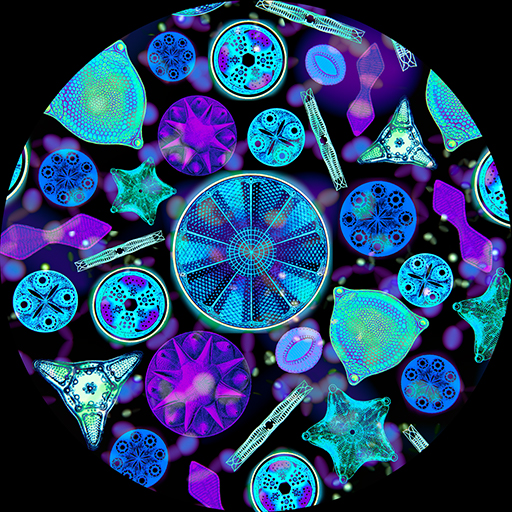

Kate Salesin
I'm a PhD student at Dartmouth doing research in computer graphics. CV
Around the lab, I spend my time experimenting and educating.
Outside the lab, I enjoy sailing, knitting, and statskeeping for Dartmouth hockey.
I'm a PhD student at Dartmouth doing research in computer graphics. CV
Around the lab, I spend my time experimenting and educating.
Outside the lab, I enjoy sailing, knitting, and statskeeping for Dartmouth hockey.

Katherine Salesin, Wojciech Jarosz. Computer Graphics Forum (Proceedings of EGSR), 38(4), July 2019.
I am very interested in finding creative, engaging, and effective teaching tools for computer science and other scientific fields.

I designed and ran the graduate reading course in winter 2020 for Master's in Digital Arts students at Dartmouth. I wrote the syllabus and assignments, ran discussions, and arranged presentations from guest speakers. I strove to encourage curiosity in the students and build my repertoire of teaching skills by testing some interactive learning techniques.

Science Day at Dartmouth is an annual event where graduate students teach kids about their research and plan fun, hands-on activities. I designed and organized a computer graphics station that taught kids and parents about some of the science behind their favorite movies and video games and we did ray tracing in real life!

As a deckhand and educator on tall ships for Call of the Sea and Sea Education Association, I have taught elementary- to college-aged students basics of sail theory, marine ecology, oceanographic research, modern and historical navigation techniques, and seamanship.
These are some projects I have worked on for fun.

For my final project in the Computational Photography class at Dartmouth, I am designing a hyperspectral camera that can be created with simple, inexpensive materials. The core of the design is a device that can be affixed to the front of an existing camera and consists of a stack of linear polarizers and clear tape (a birefringent material). When the polarizers and tape are rotated relative to one another, filters with different transmission spectra are created. By taking measurements with the device in different configurations, we can try to reconstruct the spectra of the incoming light at each pixel.

For the Rendering Competition in the Rendering Algorithms class at Dartmouth, I extended our simple homework path tracer to simulate physically accurate polarization. My image shows clear diatoms viewed through a polarization light microscope, where the wavelength-dependent phase shifts caused by light passing through polarizers and waveplates create a vivid array of colors.

I built a xylophone for fun as a computational geometry and woodworking project one spring. I wrote a Medium blog series describing the physics, computations, and woodworking process in detail.

Photonic Sentry is a Global Good/Intellectual Ventures start-up that has created a laser to zap mosquitoes, psyllids, and other pests out of the air. As a data visualization team member, I created tools for logging, organizing, and visualizing live research data from lasers and cameras. I also designed their logo and created their website.
I have also found some opportunities to serve my computer science community.